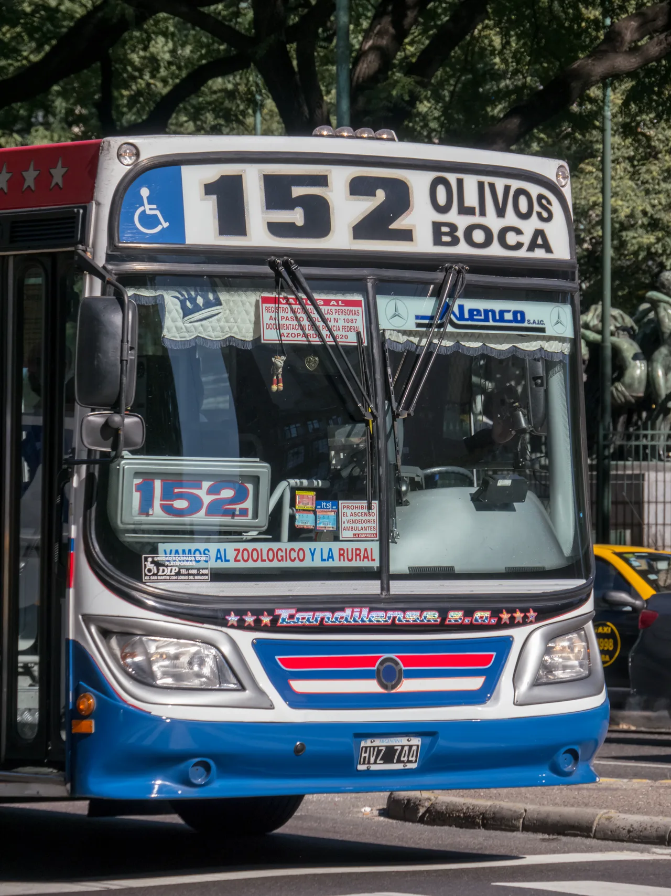
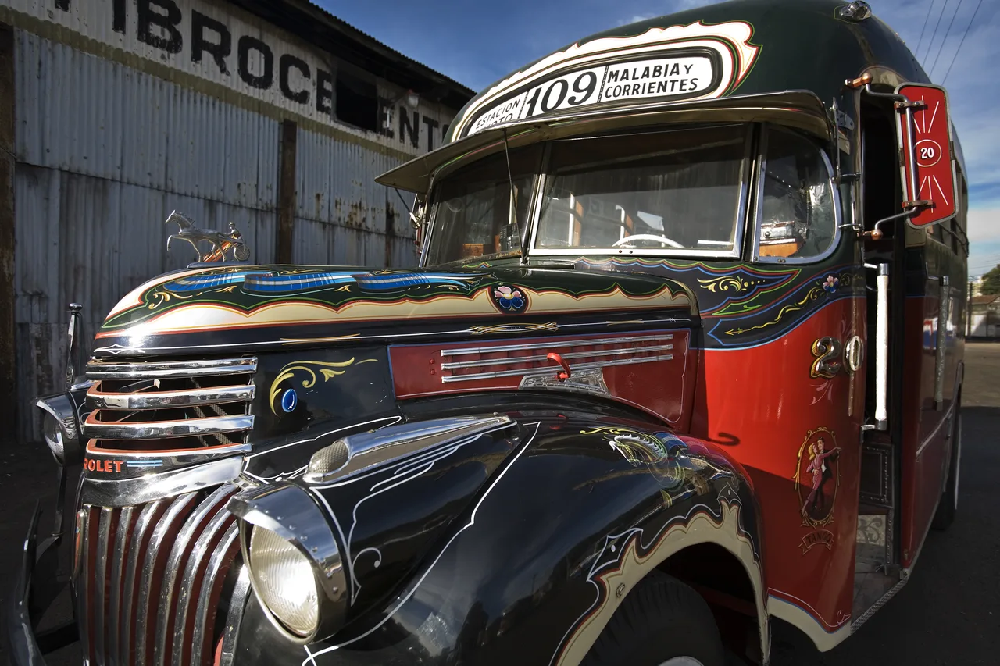

Entre el humo del diésel y el frenesí del tránsito metropolitano, el chofer del transporte colectivo convierte su cabina en una capilla barroca, un hogar íntimo y una trinchera contra la soledad. Una indagación sobre el microbús, el pesero y el colectivo como galerías populares sobre ruedas.
Quien sube a un autobús de transporte colectivo en cualquier gran metrópoli latinoamericana —sea el colectivo de Buenos Aires, el microbús o pesero de Ciudad de México, la buseta de Bogotá o la combi de Lima— experimenta de inmediato la sensación de penetrar en un territorio soberano que no responde a las leyes asépticas de la ingeniería vial moderna. Afuera reina el asfalto hostil, el embotellamiento interminable, el humo tóxico del escape y la prisa desesperada de millones de trabajadores que viajan apretados contra las ventanillas; adentro, al cruzar la puerta plegable y pagar las monedas del pasaje, el pasajero ingresa en un santuario íntimo, barroco y resplandeciente que el chofer ha construido a lo largo de los años para hacer soportables las catorce horas diarias de encierro al volante.

En el centro de esa liturgia rodante se alza el salpicadero o torpedo del vehículo, transformado en un altar doméstico donde conviven sin rubor las devociones celestiales y los fetiches profanos de la cultura popular. Sobre el terciopelo sintético que cubre el plástico rajado por el sol, descansa una figura de bulto de San Cayetano con una espiga de trigo en la mano, una Virgen de Guadalupe iluminada por una diminuta bombilla LED verde o un San Judas Tadeo rodeado de flores artificiales de tela. Pero a escasos centímetros del santo patrono cuelga una hilera de pompones multicolores de lana, una fotografía plastificada de los hijos pequeños en el día de su primera comunión, un banderín de seda del club de fútbol local y una calcomanía con un refrán lapidario que sentencia con ironía filosófica: Si tu envidia fuera tiña, ¡cuántos ciegos habría!
El volante mismo es una pieza de luthería automotriz popular. Rara vez conserva la baquelita negra o el cuero de fábrica: el chofer lo envuelve en una funda de pana acolchada, lo teje con cordones de plástico de colores cruzados en punto de canasta o le adapta una manopla giratoria de acrílico transparente con una rosa encapsulada en su interior, permitiéndole maniobrar con una sola mano entre los baches y los peatones mientras con la otra cuenta los billetes arrugados del cambio. El espejo retrovisor interior no cumple una función puramente óptica de vigilancia del tránsito: es un árbol de ofrendas donde cuelgan rosarios fosforescentes, ambientadores de cartón con olor a vainilla barata, cascabeles metálicos que tintinean con cada bache de la calzada y zapatitos de bebé de lana blanca que recuerdan la promesa de volver sano y salvo a casa al final de la noche.
Para el pensamiento tecnocrático de los planificadores urbanos educados en el modelo de transporte estandarizado de Europa o Japón, esta saturación ornamental es vista como una aberración peligrosa, una distracción innecesaria que atenta contra la seguridad vial y el orden racional del servicio público. No alcanzan a comprender que en una economía precarizada donde el conductor no es un empleado formal con salario fijo y horario regulado, sino un trabajador a destajo que depende de la guerra del centavo para pagar el combustible y la cuota diaria del patrón, la personalización de la cabina es la única trinchera psicológica que le impide enloquecer en medio de la violencia del tráfico. El chofer no conduce una máquina anónima: habita su propio hogar rodante.

Hay además en el habitáculo del colectivo una fascinante lección de ergonomía popular y tecnología acústica. El chofer adapta un pequeño ventilador de aspas de plástico conectado directamente a los cables de la batería, instala una bocina de aire comprimido con el timbre de una cucaracha o el mugido de un toro para despejar las esquinas congestionadas, y monta una consola de sonido con ecualizador gráfico iluminado en azul sobre el techo de la cabina. Desde allí comanda la atmósfera emocional de su pasaje, dosificando la cumbia villera, el bolero ranchero, la salsa de la vieja guardia o el programa radial de noticias sensacionalistas que acompaña el pulso vivo de la ciudad.
A través de los cristales traseros y laterales del vehículo, la gráfica popular dialoga con el transeúnte de la vereda. Letras fileteadas con esmaltes brillantes anuncian el destino del recorrido, nombres propios de novias o madres protectoras —La consentida, El capricho de Dios, Reina del camino— y leyendas de humor callejero que desafían la arrogancia de los automóviles particulares: No me sigas porque yo también estoy perdido; Dios bendiga este negocio y a los que pagan el pasaje completo. El autobús se convierte así en un texto móvil, en una página rodante donde la urbe popular escribe a mano alzada su propia crónica de supervivencia.
En las últimas décadas, los sistemas de transporte masivo tipo metrobús o transmilenio han intentado barrer con esta cultura, sustituyendo las viejas flotas de colectivos por convoyes articulados de color rojo o gris uniforme, donde toda personalización está terminantemente prohibida bajo amenaza de despido. Pero en las rutas de la periferia, donde el asfalto formal se termina y los cerros se trepan en pendientes de vértigo, el colectivo decorado sigue prestando su servicio fiel. Y en el brillo de esa estampa santa pegada sobre el tablero y en el tintineo de los cascabeles que mecen la marcha, late la terca victoria de quien ha sabido convertir una herramienta de trabajo extenuante en un altar ambulante de dignidad humana.
Fuentes.
- Monsiváis, Carlos (2000). Aires de familia: Cultura y sociedad en América Latina. Anagrama.
- Grimson, Alejandro (1999). Relatos de la diferencia y la igualdad: Los bolivianos en Buenos Aires. EUDEBA.
- Sarlo, Beatriz (1992). La imaginación técnica: Sueños modernos de la cultura argentina. Nueva Visión.
Investigación sobre antropología urbana y gráfica del transporte colectivo en América Latina.
Fuentes consultadas el 19.11.2026. Análisis e interpretación: RUMMOR. Edición privada para revisión.